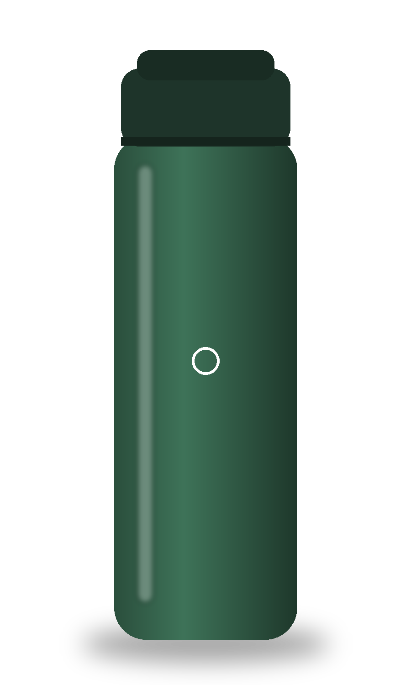

DAILY STEEL TUMBLER
하루 종일,
처음 담은 온도 그대로
출근길 커피부터 오후의 얼음물까지
한 손에 담기는 500ml 데일리 텀블러

500ml넉넉한 용량
280g가벼운 무게
3 Colors그린·크림·네이비
CHECK
이런 불편,
겪어 보셨나요?
- 1오후만 되면 미지근해지는 커피
- 2가방 속에서 새어 나온 물
- 3무거워서 결국 두고 다니는 텀블러
SOLUTION
매일 들고 싶은
가벼운 이중 구조
필요한 기능만 남기고 무게를 덜어냈습니다.
책상 위에도, 가방 속에도 자연스럽게 어울립니다.
01
이중 진공 단열 구조
두 겹의 스테인리스 사이를 진공으로 만들어
담은 온도를 오래 유지합니다.
연출 사진 자리
(실제 상품 사진·사용 장면)
02
새지 않는 실리콘 패킹
뚜껑 안쪽 실리콘 패킹이 단단히 밀착되어
가방에 넣어도 안심입니다.
03
공간에 어울리는 3가지 컬러
차분한 그린, 따뜻한 크림, 단정한 네이비.
SPEC
제품 정보
| 용량 | 500ml |
| 무게 | 280g |
| 소재 | 스테인리스 304, 실리콘 |
| 컬러 | 그린 / 크림 / 네이비 |
| 크기 | 지름 7cm × 높이 22cm |
FAQ
자주 묻는 질문
식기세척기에 넣어도 되나요?
진공 구조 보호를 위해 손세척을 권장합니다.
탄산음료를 담아도 되나요?
내부 압력으로 뚜껑이 열릴 수 있어 권장하지 않습니다.
구매 안내배송: 결제 후 1~3일 이내 출고 · 교환/반품: 수령 후 7일 이내 (사용 흔적이 없는 경우)
시안용 가상 상품입니다 · 폰트: Pretendard (OFL)